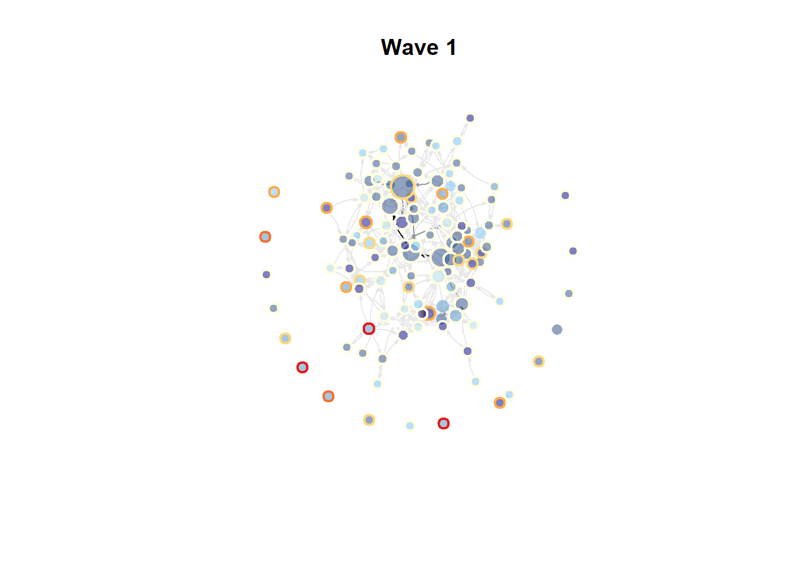
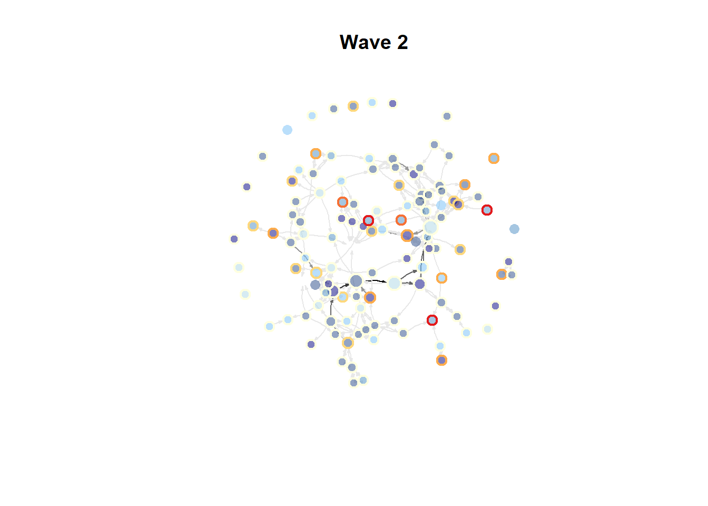
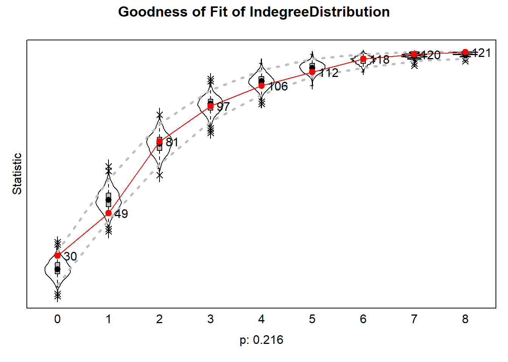
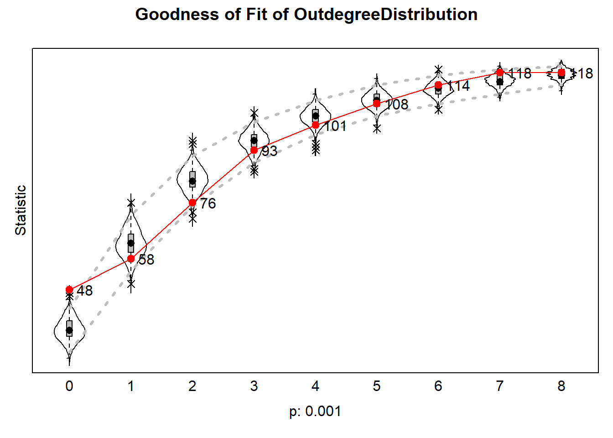
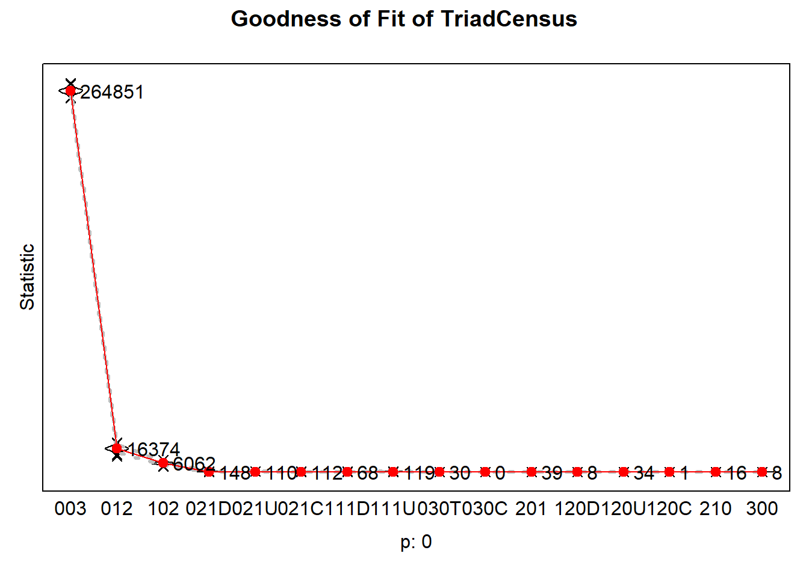
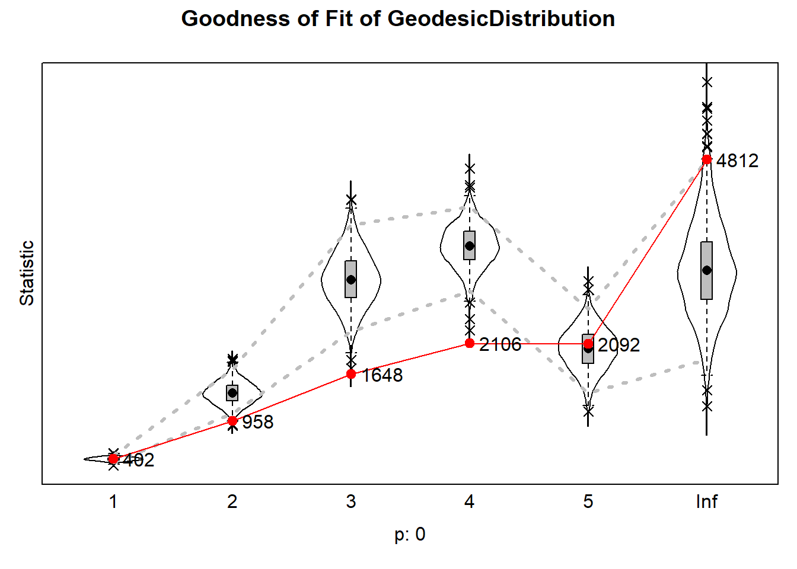
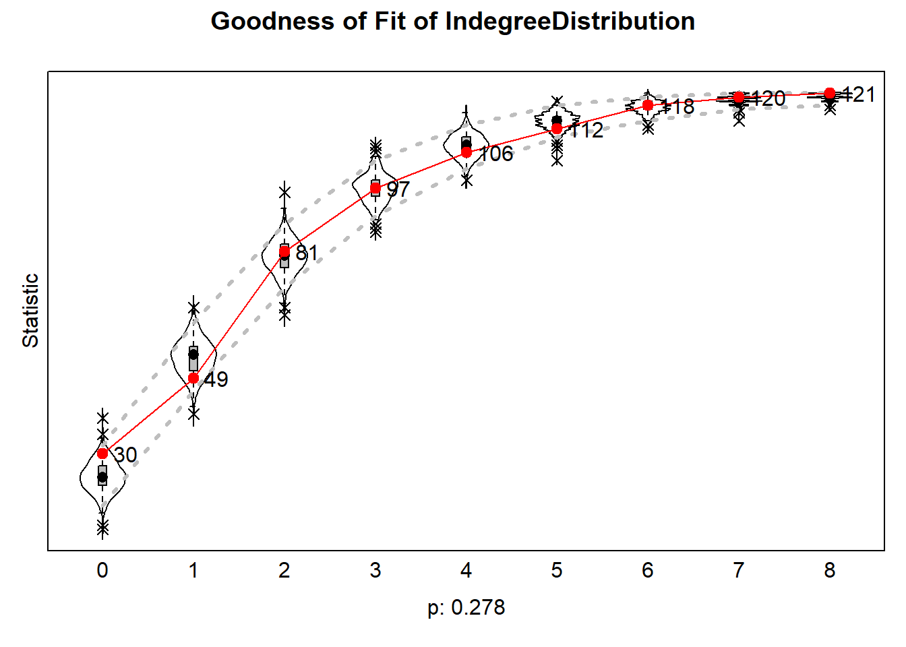
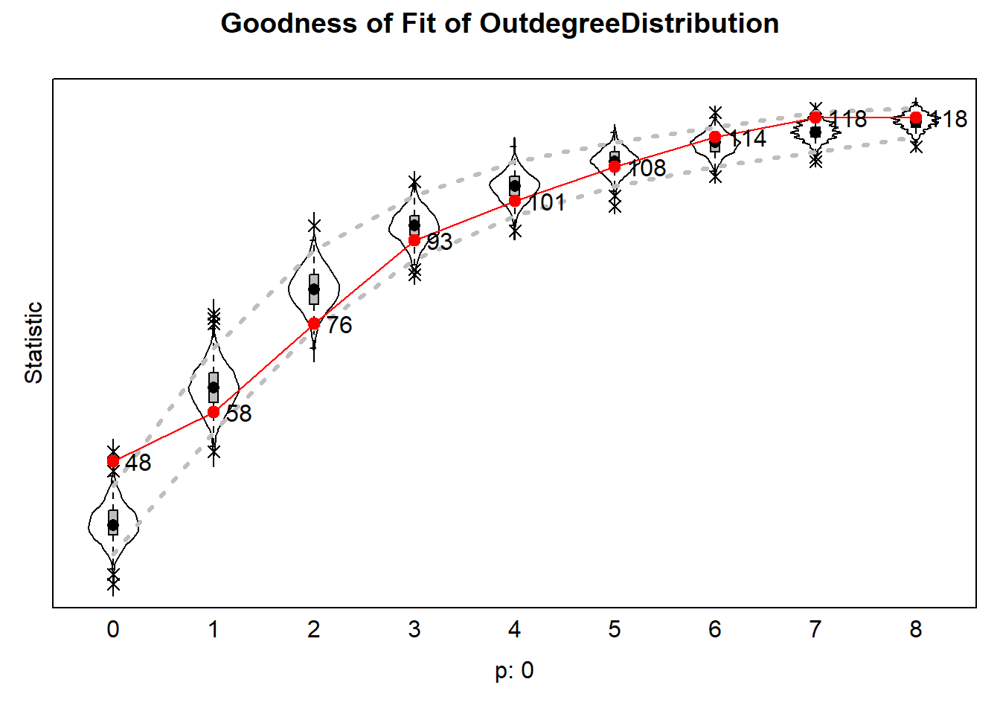

Analyses and Results
Susanna
2026-09-29
#add cleaning environment + checking package code from Jochem
rm(list = ls())
fpackage.check <- function(packages) {
lapply(packages, FUN = function(x) {
if (!require(x, character.only = TRUE)) {
install.packages(x, dependencies = TRUE)
library(x, character.only = TRUE)
}
})
}
fsave <- function(x, file = NULL, location = "./data/processed/") {
ifelse(!dir.exists("data"), dir.create("data"), FALSE)
ifelse(!dir.exists("data/processed"), dir.create("data/processed"), FALSE)
if (is.null(file))
file = deparse(substitute(x))
datename <- substr(gsub("[:-]", "", Sys.time()), 1, 8)
totalname <- paste(location, datename, file, ".rda", sep = "")
save(x, file = totalname) #need to fix if file is reloaded as input name, not as x.
}
fload <- function(filename) {
load(filename)
get(ls()[ls() != "filename"])
}
fshowdf <- function(x, ...) {
knitr::kable(x, digits = 2, "html", ...) %>%
kableExtra::kable_styling(bootstrap_options = c("striped", "hover")) %>%
kableExtra::scroll_box(width = "100%", height = "300px")
}
colorize <- function(x, color) {
sprintf("<span style='color: %s;'>%s</span>", color, x)
}
packages <- c("sna","ape", "network", "devtools", "igraph", "RSiena", "tidyverse", "stringdist", "stringi")
lapply(packages, require, character.only=T)## Loading required package: sna## Warning: package 'sna' was built under R version 4.5.3## Loading required package: statnet.common## Warning: package 'statnet.common' was built under R version 4.5.3##
## Attaching package: 'statnet.common'## The following objects are masked from 'package:base':
##
## attr, order, replace## Loading required package: network## Warning: package 'network' was built under R version 4.5.3##
## 'network' 1.20.0 (2026-02-06), part of the Statnet Project
## * 'news(package="network")' for changes since last version
## * 'citation("network")' for citation information
## * 'https://statnet.org' for help, support, and other information## sna: Tools for Social Network Analysis
## Version 2.8 created on 2024-09-07.
## copyright (c) 2005, Carter T. Butts, University of California-Irvine
## For citation information, type citation("sna").
## Type help(package="sna") to get started.## Loading required package: ape## Warning: package 'ape' was built under R version 4.5.3##
## Attaching package: 'ape'## The following objects are masked from 'package:sna':
##
## consensus, degree## Loading required package: devtools## Warning: package 'devtools' was built under R version 4.5.3## Loading required package: usethis## Warning: package 'usethis' was built under R version 4.5.3## Loading required package: igraph## Warning: package 'igraph' was built under R version 4.5.3##
## Attaching package: 'igraph'## The following objects are masked from 'package:ape':
##
## degree, edges, mst, ring## The following objects are masked from 'package:sna':
##
## betweenness, bonpow, closeness, components, degree, dyad.census,
## evcent, hierarchy, is.connected, neighborhood, triad.census## The following objects are masked from 'package:network':
##
## %c%, %s%, add.edges, add.vertices, delete.edges, delete.vertices,
## get.edge.attribute, get.edges, get.vertex.attribute, is.bipartite,
## is.directed, list.edge.attributes, list.vertex.attributes,
## set.edge.attribute, set.vertex.attribute## The following objects are masked from 'package:stats':
##
## decompose, spectrum## The following object is masked from 'package:base':
##
## union## Loading required package: RSiena## Warning: package 'RSiena' was built under R version 4.5.3## Loading required package: tidyverse## Warning: package 'tidyverse' was built under R version 4.5.3## Warning: package 'tibble' was built under R version 4.5.3## Warning: package 'tidyr' was built under R version 4.5.3## Warning: package 'readr' was built under R version 4.5.2## Warning: package 'dplyr' was built under R version 4.5.3## Warning: package 'stringr' was built under R version 4.5.3## Warning: package 'forcats' was built under R version 4.5.2## ── Attaching core tidyverse packages ─────────────────── tidyverse 2.0.0 ──
## ✔ dplyr 1.2.1 ✔ readr 2.1.6
## ✔ forcats 1.0.1 ✔ stringr 1.6.0
## ✔ ggplot2 4.0.0 ✔ tibble 3.3.1
## ✔ lubridate 1.9.4 ✔ tidyr 1.3.2
## ✔ purrr 1.1.0## ── Conflicts ───────────────────────────────────── tidyverse_conflicts() ──
## ✖ lubridate::%--%() masks igraph::%--%()
## ✖ dplyr::as_data_frame() masks tibble::as_data_frame(), igraph::as_data_frame()
## ✖ purrr::compose() masks igraph::compose()
## ✖ tidyr::crossing() masks igraph::crossing()
## ✖ dplyr::filter() masks stats::filter()
## ✖ dplyr::lag() masks stats::lag()
## ✖ purrr::simplify() masks igraph::simplify()
## ✖ dplyr::where() masks ape::where()
## ℹ Use the conflicted package (<http://conflicted.r-lib.org/>) to force all conflicts to become errors
## Loading required package: stringdist## Warning: package 'stringdist' was built under R version 4.5.2##
## Attaching package: 'stringdist'
##
## The following object is masked from 'package:tidyr':
##
## extract
##
## Loading required package: stringi## Warning: package 'stringi' was built under R version 4.5.3## [[1]]
## [1] TRUE
##
## [[2]]
## [1] TRUE
##
## [[3]]
## [1] TRUE
##
## [[4]]
## [1] TRUE
##
## [[5]]
## [1] TRUE
##
## [[6]]
## [1] TRUE
##
## [[7]]
## [1] TRUE
##
## [[8]]
## [1] TRUE
##
## [[9]]
## [1] TRUEload("./data/EduBridgeforRSiena.RData")1 Descriptive Analysis
1.1 Visualisation
Inside colour based on average parental education, outside colour based on difference in parental education Shape based on gender?
hangingt1nona <- hanging_df_t1
hangingt1nona[hangingt1nona==9]<- 0
hangingt1nona <- as.matrix(hangingt1nona)
hangingt1 <- graph_from_adjacency_matrix(hangingt1nona, mode = "directed", weighted = NULL, diag = TRUE, add.colnames = NA, add.rownames = NA)
rangewarm <- colorRampPalette(c("lightyellow", "#fecc5c", "#fd8d3c", "#e31a1c"))
rangeblue <- colorRampPalette(c("lightblue", "steelblue1", "steelblue4", "navy"))
rangegray <- colorRampPalette(c("grey91", "grey50", "grey30", "black"))
nbins <- 5
colourparedudif <- rangewarm(nbins)
colourpareduav <-rangeblue(nbins)
colourbetweenness <-rangegray(nbins)
V(hangingt1)$size = igraph::betweenness(hangingt1, normalized = T, directed = T)*50 + 7
plot(hangingt1,
vertex.color = adjustcolor(colourpareduav[cut(parenteduav, breaks = nbins)], alpha.f = .5),
vertex.frame.color = colourparedudif[cut(parentedudif, breaks = nbins)],
vertex.frame.width = 2,
vertex.label = NA,
edge.curved = 0.2,
edge.arrow.size = 0.2,
edge.color = colourbetweenness[cut(igraph::edge_betweenness(hangingt1), breaks=nbins )],
layout = layout.fruchterman.reingold,
main = "Wave 1")
hangingt2nona <- hanging_df_t2
hangingt2nona[hangingt2nona==9]<- 0
hangingt2nona <- as.matrix(hangingt2nona)
hangingt2 <- graph_from_adjacency_matrix(hangingt2nona, mode = "directed", weighted = NULL, diag = TRUE, add.colnames = NA, add.rownames = NA)
V(hangingt2)$size = igraph::betweenness(hangingt2, normalized = T, directed = T)*50 + 7
plot(hangingt2,
vertex.color = adjustcolor(colourpareduav[cut(parenteduav, breaks = nbins)], alpha.f = .5),
vertex.frame.color = colourparedudif[cut(parentedudif, breaks = nbins)],
vertex.frame.width = 2,
vertex.label = NA,
edge.curved = 0.2,
edge.arrow.size = 0.2,
edge.color = colourbetweenness[cut(igraph::edge_betweenness(hangingt2), breaks=nbins )],
layout = layout.fruchterman.reingold,
main = "Wave 2")
1.2 Segregation
# step 1: calculate distances
#geodistances <- geodist(w1_network, count.paths = TRUE)
#geodistances <- geodistances$gdist
# set the distance to yourself as Inf
#diag(geodistances) <- Inf
# step 2: define a distance decay function. This one is pretty standard in the spatial
# autocorrelation literature but actually pretty arbitrary.
#weights2 <- exp(-geodistances)#Jochem's formula for Moran's I
fMoran.I <- function(x, weight, scaled = FALSE, na.rm = FALSE, alternative = "two.sided", rowstandardize = TRUE) {
if (rowstandardize) {
if (dim(weight)[1] != dim(weight)[2])
stop("'weight' must be a square matrix")
n <- length(x)
if (dim(weight)[1] != n)
stop("'weight' must have as many rows as observations in 'x'")
ei <- -1/(n - 1)
nas <- is.na(x)
if (any(nas)) {
if (na.rm) {
x <- x[!nas]
n <- length(x)
weight <- weight[!nas, !nas]
} else {
warning("'x' has missing values: maybe you wanted to set na.rm = TRUE?")
return(list(observed = NA, expected = ei, sd = NA, p.value = NA))
}
}
ROWSUM <- rowSums(weight)
ROWSUM[ROWSUM == 0] <- 1
weight <- weight/ROWSUM
s <- sum(weight)
m <- mean(x)
y <- x - m
cv <- sum(weight * y %o% y)
v <- sum(y^2)
obs <- (n/s) * (cv/v)
if (scaled) {
i.max <- (n/s) * (sd(rowSums(weight) * y)/sqrt(v/(n - 1)))
obs <- obs/i.max
}
S1 <- 0.5 * sum((weight + t(weight))^2)
S2 <- sum((apply(weight, 1, sum) + apply(weight, 2, sum))^2)
s.sq <- s^2
k <- (sum(y^4)/n)/(v/n)^2
sdi <- sqrt((n * ((n^2 - 3 * n + 3) * S1 - n * S2 + 3 * s.sq) - k * (n * (n - 1) * S1 - 2 * n *
S2 + 6 * s.sq))/((n - 1) * (n - 2) * (n - 3) * s.sq) - 1/((n - 1)^2))
alternative <- match.arg(alternative, c("two.sided", "less", "greater"))
pv <- pnorm(obs, mean = ei, sd = sdi)
if (alternative == "two.sided")
pv <- if (obs <= ei)
2 * pv else 2 * (1 - pv)
if (alternative == "greater")
pv <- 1 - pv
list(observed = obs, expected = ei, sd = sdi, p.value = pv)
} else {
if (dim(weight)[1] != dim(weight)[2])
stop("'weight' must be a square matrix")
n <- length(x)
if (dim(weight)[1] != n)
stop("'weight' must have as many rows as observations in 'x'")
ei <- -1/(n - 1)
nas <- is.na(x)
if (any(nas)) {
if (na.rm) {
x <- x[!nas]
n <- length(x)
weight <- weight[!nas, !nas]
} else {
warning("'x' has missing values: maybe you wanted to set na.rm = TRUE?")
return(list(observed = NA, expected = ei, sd = NA, p.value = NA))
}
}
# ROWSUM <- rowSums(weight) ROWSUM[ROWSUM == 0] <- 1 weight <- weight/ROWSUM
s <- sum(weight)
m <- mean(x)
y <- x - m
cv <- sum(weight * y %o% y)
v <- sum(y^2)
obs <- (n/s) * (cv/v)
if (scaled) {
i.max <- (n/s) * (sd(rowSums(weight) * y)/sqrt(v/(n - 1)))
obs <- obs/i.max
}
S1 <- 0.5 * sum((weight + t(weight))^2)
S2 <- sum((apply(weight, 1, sum) + apply(weight, 2, sum))^2)
s.sq <- s^2
k <- (sum(y^4)/n)/(v/n)^2
sdi <- sqrt((n * ((n^2 - 3 * n + 3) * S1 - n * S2 + 3 * s.sq) - k * (n * (n - 1) * S1 - 2 * n *
S2 + 6 * s.sq))/((n - 1) * (n - 2) * (n - 3) * s.sq) - 1/((n - 1)^2))
alternative <- match.arg(alternative, c("two.sided", "less", "greater"))
pv <- pnorm(obs, mean = ei, sd = sdi)
if (alternative == "two.sided")
pv <- if (obs <= ei)
2 * pv else 2 * (1 - pv)
if (alternative == "greater")
pv <- 1 - pv
list(observed = obs, expected = ei, sd = sdi, p.value = pv)
}
}
#fMoran.I(genderw1, scaled = FALSE, weight = weights2, na.rm = TRUE, rowstandardize = FALSE)2 Explanatory Analysis
2.1 Model input preparation
Get Network, Separate waves
#wave 1 = hangingt1, wave 2 = hangingt2
hangingt1m <- as.matrix(hanging_df_t1)
hangingt2m <- as.matrix(hanging_df_t2)
#diagonals to zero
diag(hangingt1m) <- 0
diag(hangingt2m) <- 0
#missings to NA
hangingt1mwna <- hangingt1m
hangingt1mwna[hangingt1mwna == 9] <- 10
hangingt2mwna <- hangingt2m
hangingt2mwna[hangingt2mwna == 9] <- 10
# #missings to 0 --> don't use this one
# hangingt1mnona <- hangingt1m
# hangingt1mnona[hangingt1mnona == 9] <- 0
# hangingt2mnona <- hangingt2m
# hangingt2mnona[hangingt2mnona == 9] <- 0
#nets into array
hanging_array <- array(data = c(hangingt1mwna, hangingt2mwna), dim = c(dim(hangingt1mwna), 2))
#hanging_arraynona <- array(data = c(hangingt1mnona, hangingt2mnona), dim = c(dim(hangingt1mnona), 2))
#dependent
net <- sienaDependent(hanging_array)Covariates: parenteduav, parentedudif, ethnew, gendernew
gendercov <- coCovar(gendernew) #constant covariate
ethcov <- coCovar(ethnew)
parentedudifcov <- coCovar(parentedudif)
parenteduavcov <- coCovar(parenteduav)
mydata <- sienaDataCreate(net, gendercov, ethcov, parentedudifcov, parenteduavcov)Effects
myeff0910 <- getEffects(mydata)
# effectsDocumentation(myeff0910)ifelse(!dir.exists("results"), dir.create("results"), FALSE)## [1] FALSEprint01Report(mydata, modelname = "./results/edu_bridge")First some basic effects that are not really of theoretical interest:
myeff <- includeEffects(myeff0910, outAct, inPop, inAct, recip, GWESPFF) ## effectNumber effectName shortName include fix test
## 1 18 reciprocity recip TRUE FALSE FALSE
## 2 81 indegree - popularity inPop TRUE FALSE FALSE
## 3 118 outdegree - activity outAct TRUE FALSE FALSE
## 4 127 indegree - activity(#) inAct TRUE FALSE FALSE
## initialValue parm
## 1 0 0
## 2 0 0
## 3 0 0
## 4 0 1Now I’ll introduce homophily:
myeff <- includeEffects(myeff, simX, egoX, altX, interaction1 = "parenteduavcov")## effectNumber effectName shortName include fix test
## 1 817 parenteduavcov alter altX TRUE FALSE FALSE
## 2 832 parenteduavcov ego egoX TRUE FALSE FALSE
## 3 878 parenteduavcov similarity simX TRUE FALSE FALSE
## initialValue parm
## 1 0 0
## 2 0 0
## 3 0 0myeff## effectName include fix test initialValue parm
## 1 basic rate parameter net TRUE FALSE FALSE 5.46796 0
## 2 outdegree (density) TRUE FALSE FALSE -1.72530 0
## 3 reciprocity TRUE FALSE FALSE 0.00000 0
## 4 indegree - popularity TRUE FALSE FALSE 0.00000 0
## 5 outdegree - activity TRUE FALSE FALSE 0.00000 0
## 6 indegree - activity(#) TRUE FALSE FALSE 0.00000 1
## 7 parenteduavcov alter TRUE FALSE FALSE 0.00000 0
## 8 parenteduavcov ego TRUE FALSE FALSE 0.00000 0
## 9 parenteduavcov similarity TRUE FALSE FALSE 0.00000 0##Model 1: Homophily
myAlgorithm <- sienaAlgorithmCreate(projname = "edu_bridge",
MaxDegree = c(net = 10),
seed = 30000)## If you use this algorithm object, siena07 will create/use an output file edu_bridge.txt .mod1 <- siena07(myAlgorithm, data = mydata, effects = myeff)
mod1## Estimates, standard errors and convergence t-ratios
##
## Estimate Standard Convergence
## Error t-ratio
##
## Rate parameters:
## 0 Rate parameter 5.9987 ( 0.5027 )
##
## Other parameters:
## 1. eval outdegree (density) -3.3983 ( 0.1984 ) -0.0124
## 2. eval reciprocity 3.1171 ( 0.3831 ) 0.0293
## 3. eval indegree - popularity 0.0755 ( 0.0284 ) 0.0177
## 4. eval outdegree - activity 0.1368 ( 0.0240 ) -0.0090
## 5. eval indegree - activity(1) -0.2857 ( 0.1078 ) 0.0010
## 6. eval parenteduavcov alter 0.0466 ( 0.0302 ) 0.0264
## 7. eval parenteduavcov ego -0.0111 ( 0.0315 ) -0.0711
## 8. eval parenteduavcov similarity -0.1429 ( 0.3418 ) -0.0618
##
## Overall maximum convergence ratio: 0.1400
##
##
## Degrees constrained to maximum values:
## net : 10
##
##
## Total of 2803 iteration steps.The overall convergence ratio is under .25, which is acceptable. Convergence of individual parameters is also sufficient. The rate parameter value is 7.34, indicating that each actor had, on average, 6.92 options for change (‘mini-steps’) within the simulation.
test_parameter(mod1, tested=8) #Wald-type significance test## Tested effects:
## parenteduavcov similarity
## chi-squared = 0.17, d.f. = 1; standard error of linear combination = 0.342; one-sided Z = -0.42; two-sided p = 0.676.The estimate for homophily based on average parental educational attainment is positive, but relatively low and with a large standard error, indicating uncertainty. The Wald-type significance test indicates that the effect of similarity in average parental educational attainment is insignificant, p = .673. ##Model 2: Homophily x Educationally Mixed Family
myeff2 <- includeEffects(myeff, egoX, interaction1 = "parentedudifcov")## effectNumber effectName shortName include fix test initialValue
## 1 648 parentedudifcov ego egoX TRUE FALSE FALSE 0
## parm
## 1 0myeff2## effectName include fix test initialValue parm
## 1 basic rate parameter net TRUE FALSE FALSE 5.46796 0
## 2 outdegree (density) TRUE FALSE FALSE -1.72530 0
## 3 reciprocity TRUE FALSE FALSE 0.00000 0
## 4 indegree - popularity TRUE FALSE FALSE 0.00000 0
## 5 outdegree - activity TRUE FALSE FALSE 0.00000 0
## 6 indegree - activity(#) TRUE FALSE FALSE 0.00000 1
## 7 parentedudifcov ego TRUE FALSE FALSE 0.00000 0
## 8 parenteduavcov alter TRUE FALSE FALSE 0.00000 0
## 9 parenteduavcov ego TRUE FALSE FALSE 0.00000 0
## 10 parenteduavcov similarity TRUE FALSE FALSE 0.00000 0myeff2 <- set_interaction(myeff2, list(simX, egoX), covar1=c("parenteduavcov", "parentedudifcov"))## effectNumber effectName shortName
## 1 648 parentedudifcov ego egoX
## 2 878 parenteduavcov similarity simX
## 3 1001 parentedudifcov ego x parenteduavcov similarity unspInt
## include fix test initialValue parm effect1 effect2
## 1 TRUE FALSE FALSE 0 0 0 0
## 2 TRUE FALSE FALSE 0 0 0 0
## 3 TRUE FALSE FALSE 0 0 878 648myeff2## effectName include fix test
## 1 basic rate parameter net TRUE FALSE FALSE
## 2 outdegree (density) TRUE FALSE FALSE
## 3 reciprocity TRUE FALSE FALSE
## 4 indegree - popularity TRUE FALSE FALSE
## 5 outdegree - activity TRUE FALSE FALSE
## 6 indegree - activity(1) TRUE FALSE FALSE
## 7 parentedudifcov ego TRUE FALSE FALSE
## 8 parenteduavcov alter TRUE FALSE FALSE
## 9 parenteduavcov ego TRUE FALSE FALSE
## 10 parenteduavcov similarity TRUE FALSE FALSE
## 11 parentedudifcov ego x parenteduavcov similarity TRUE FALSE FALSE
## initialValue parm effect1 effect2
## 1 5.46796 0 0 0
## 2 -1.72530 0 0 0
## 3 0.00000 0 0 0
## 4 0.00000 0 0 0
## 5 0.00000 0 0 0
## 6 0.00000 1 0 0
## 7 0.00000 0 0 0
## 8 0.00000 0 0 0
## 9 0.00000 0 0 0
## 10 0.00000 0 0 0
## 11 0.00000 0 878 648mod2 <- siena07(myAlgorithm, data = mydata, effects = myeff2, prevAns = mod1, returnDeps = TRUE)
mod2## Estimates, standard errors and convergence t-ratios
##
## Estimate Standard Convergence
## Error t-ratio
##
## Rate parameters:
## 0 Rate parameter 5.9423 ( 0.4677 )
##
## Other parameters:
## 1. eval outdegree (density) -3.3896 ( 0.2360 ) -0.0298
## 2. eval reciprocity 3.1229 ( 0.3274 ) -0.0313
## 3. eval indegree - popularity 0.0741 ( 0.0314 ) -0.0326
## 4. eval outdegree - activity 0.1334 ( 0.0213 ) -0.0286
## 5. eval indegree - activity(1) -0.2872 ( 0.0869 ) -0.0511
## 6. eval parentedudifcov ego -0.1410 ( 0.0819 ) -0.0080
## 7. eval parenteduavcov alter 0.0595 ( 0.0311 ) -0.0020
## 8. eval parenteduavcov ego -0.0049 ( 0.0327 ) 0.0209
## 9. eval parenteduavcov similarity -0.3434 ( 0.3755 ) -0.0142
## 10. eval parentedudifcov ego x parenteduavcov similarity -0.5854 ( 0.3906 ) 0.0448
##
## Overall maximum convergence ratio: 0.0910
##
##
## Degrees constrained to maximum values:
## net : 10
##
##
## Total of 2926 iteration steps.The overall maximum convergence ratio is once again acceptable. The interaction effect of the difference between ego’s parents’ educational attainment with homophily is negative.
test_parameter(mod2, tested=10)## Tested effects:
## parentedudifcov ego x parenteduavcov similarity
## chi-squared = 2.25, d.f. = 1; standard error of linear combination = 0.391; one-sided Z = -1.50; two-sided p = 0.134.2.1.1 Goodness of Fit
#Jochem's formula for Geodesic Distribution
GeodesicDistribution <- function(i, data, sims, period, groupName, varName, levls = c(1:5, Inf), cumulative = TRUE,
...) {
x <- networkExtraction(i, data, sims, period, groupName, varName)
require(sna)
a <- sna::geodist(symmetrize(x))$gdist
if (cumulative) {
gdi <- sapply(levls, function(i) {
sum(a <= i)
})
} else {
gdi <- sapply(levls, function(i) {
sum(a == i)
})
}
names(gdi) <- as.character(levls)
gdi
}
# The following function is taken from the help page for sienaTest
testall <- function(ans) {
for (i in which(ans$test)) {
sct <- score.Test(ans, i)
cat(ans$requestedEffects$effectName[i], "\n")
print(sct)
}
invisible(score.Test(ans))
}gof12.10.1 <- sienaGOF(mod2, IndegreeDistribution, verbose = FALSE, join = TRUE, varName = "net")
plot(gof12.10.1)
gof12.10.2 <- sienaGOF(mod2, OutdegreeDistribution, verbose = FALSE, join = TRUE, varName = "net")
plot(gof12.10.2)
gof12.10.3 <- sienaGOF(mod2, TriadCensus, verbose = FALSE, join = TRUE, varName = "net")
plot(gof12.10.3)
gofgdm2 <- sienaGOF(mod2, GeodesicDistribution, cumulative = FALSE, verbose = FALSE, join = TRUE, varName = "net")
plot(gofgdm2)
2.1.2 (sub)Model 3: inIsDegree
myeff3 <- includeEffects(myeff2, inIsDegree)## effectNumber effectName shortName include fix test initialValue
## 1 160 in-isolate Outdegree inIsDegree TRUE FALSE FALSE 0
## parm
## 1 0myeff3## effectName include fix test
## 1 basic rate parameter net TRUE FALSE FALSE
## 2 outdegree (density) TRUE FALSE FALSE
## 3 reciprocity TRUE FALSE FALSE
## 4 indegree - popularity TRUE FALSE FALSE
## 5 outdegree - activity TRUE FALSE FALSE
## 6 indegree - activity(1) TRUE FALSE FALSE
## 7 in-isolate Outdegree TRUE FALSE FALSE
## 8 parentedudifcov ego TRUE FALSE FALSE
## 9 parenteduavcov alter TRUE FALSE FALSE
## 10 parenteduavcov ego TRUE FALSE FALSE
## 11 parenteduavcov similarity TRUE FALSE FALSE
## 12 parentedudifcov ego x parenteduavcov similarity TRUE FALSE FALSE
## initialValue parm effect1 effect2
## 1 5.46796 0 0 0
## 2 -1.72530 0 0 0
## 3 0.00000 0 0 0
## 4 0.00000 0 0 0
## 5 0.00000 0 0 0
## 6 0.00000 1 0 0
## 7 0.00000 0 0 0
## 8 0.00000 0 0 0
## 9 0.00000 0 0 0
## 10 0.00000 0 0 0
## 11 0.00000 0 0 0
## 12 0.00000 0 878 648mod3 <- siena07(myAlgorithm, data = mydata, effects = myeff3, prevAns = mod2, returnDeps = TRUE)
mod3## Estimates, standard errors and convergence t-ratios
##
## Estimate Standard Convergence
## Error t-ratio
##
## Rate parameters:
## 0 Rate parameter 5.9237 ( 0.4616 )
##
## Other parameters:
## 1. eval outdegree (density) -3.3207 ( 0.4636 ) 0.0359
## 2. eval reciprocity 3.1345 ( 0.3625 ) 0.0271
## 3. eval indegree - popularity 0.0769 ( 0.0371 ) 0.0189
## 4. eval outdegree - activity 0.1340 ( 0.0256 ) 0.0611
## 5. eval indegree - activity(1) -0.3098 ( 0.1243 ) 0.0068
## 6. eval in-isolate Outdegree -0.2198 ( 1.2082 ) -0.0643
## 7. eval parentedudifcov ego -0.1362 ( 0.0960 ) -0.0135
## 8. eval parenteduavcov alter 0.0603 ( 0.0333 ) -0.0174
## 9. eval parenteduavcov ego -0.0082 ( 0.0336 ) 0.0027
## 10. eval parenteduavcov similarity -0.3323 ( 0.4085 ) -0.0326
## 11. eval parentedudifcov ego x parenteduavcov similarity -0.6027 ( 0.4239 ) 0.0339
##
## Overall maximum convergence ratio: 0.1425
##
##
## Degrees constrained to maximum values:
## net : 10
##
##
## Total of 3007 iteration steps.2.1.3 Goodness of Fit
gof12.10.4 <- sienaGOF(mod3, IndegreeDistribution, verbose = FALSE, join = TRUE, varName = "net")
plot(gof12.10.4)
gof12.10.5 <- sienaGOF(mod3, OutdegreeDistribution, verbose = FALSE, join = TRUE, varName = "net")
plot(gof12.10.5)
This did not change anything. I will kick inIsDegree out and replace it with a different isolate effect.2.1.4 (sub)Model 4: isolateNet
myeff3.2 <- includeEffects(myeff2, isolateNet)## effectNumber effectName shortName include fix test initialValue parm
## 1 161 network-isolate isolateNet TRUE FALSE FALSE 0 0myeff3.2## effectName include fix test
## 1 basic rate parameter net TRUE FALSE FALSE
## 2 outdegree (density) TRUE FALSE FALSE
## 3 reciprocity TRUE FALSE FALSE
## 4 indegree - popularity TRUE FALSE FALSE
## 5 outdegree - activity TRUE FALSE FALSE
## 6 indegree - activity(1) TRUE FALSE FALSE
## 7 network-isolate TRUE FALSE FALSE
## 8 parentedudifcov ego TRUE FALSE FALSE
## 9 parenteduavcov alter TRUE FALSE FALSE
## 10 parenteduavcov ego TRUE FALSE FALSE
## 11 parenteduavcov similarity TRUE FALSE FALSE
## 12 parentedudifcov ego x parenteduavcov similarity TRUE FALSE FALSE
## initialValue parm effect1 effect2
## 1 5.46796 0 0 0
## 2 -1.72530 0 0 0
## 3 0.00000 0 0 0
## 4 0.00000 0 0 0
## 5 0.00000 0 0 0
## 6 0.00000 1 0 0
## 7 0.00000 0 0 0
## 8 0.00000 0 0 0
## 9 0.00000 0 0 0
## 10 0.00000 0 0 0
## 11 0.00000 0 0 0
## 12 0.00000 0 878 648#mod4 <- siena07(myAlgorithm, data = mydata, effects = myeff3.2, prevAns = mod2, returnDeps = TRUE)
#mod4Convergence of 18 is very much unacceptable.
2.1.5 (sub)Model 5: outIso
myeff3.3 <- includeEffects(myeff2, outIso)## effectNumber effectName shortName include fix test initialValue parm
## 1 149 out-isolate outIso TRUE FALSE FALSE 0 1myeff3.3## effectName include fix test
## 1 basic rate parameter net TRUE FALSE FALSE
## 2 outdegree (density) TRUE FALSE FALSE
## 3 reciprocity TRUE FALSE FALSE
## 4 indegree - popularity TRUE FALSE FALSE
## 5 outdegree - activity TRUE FALSE FALSE
## 6 indegree - activity(1) TRUE FALSE FALSE
## 7 out-isolate TRUE FALSE FALSE
## 8 parentedudifcov ego TRUE FALSE FALSE
## 9 parenteduavcov alter TRUE FALSE FALSE
## 10 parenteduavcov ego TRUE FALSE FALSE
## 11 parenteduavcov similarity TRUE FALSE FALSE
## 12 parentedudifcov ego x parenteduavcov similarity TRUE FALSE FALSE
## initialValue parm effect1 effect2
## 1 5.46796 0 0 0
## 2 -1.72530 0 0 0
## 3 0.00000 0 0 0
## 4 0.00000 0 0 0
## 5 0.00000 0 0 0
## 6 0.00000 1 0 0
## 7 0.00000 1 0 0
## 8 0.00000 0 0 0
## 9 0.00000 0 0 0
## 10 0.00000 0 0 0
## 11 0.00000 0 0 0
## 12 0.00000 0 878 648mod5 <- siena07(myAlgorithm, data = mydata, effects = myeff3.3, prevAns = mod2, returnDeps = TRUE)
mod5## Estimates, standard errors and convergence t-ratios
##
## Estimate Standard Convergence
## Error t-ratio
##
## Rate parameters:
## 0 Rate parameter 6.4216 ( 0.5250 )
##
## Other parameters:
## 1. eval outdegree (density) -2.5009 ( 0.2335 ) 0.0120
## 2. eval reciprocity 3.1458 ( 0.3281 ) -0.0335
## 3. eval indegree - popularity 0.0680 ( 0.0353 ) 0.0224
## 4. eval outdegree - activity 0.0586 ( 0.0215 ) 0.0542
## 5. eval indegree - activity(1) -0.2806 ( 0.0699 ) 0.0104
## 6. eval out-isolate 2.9504 ( 0.5198 ) 0.0362
## 7. eval parentedudifcov ego -0.1191 ( 0.0700 ) 0.0096
## 8. eval parenteduavcov alter 0.0568 ( 0.0313 ) 0.0147
## 9. eval parenteduavcov ego -0.0045 ( 0.0288 ) 0.0398
## 10. eval parenteduavcov similarity -0.4054 ( 0.3612 ) 0.0011
## 11. eval parentedudifcov ego x parenteduavcov similarity -0.4929 ( 0.3687 ) -0.0410
##
## Overall maximum convergence ratio: 0.1349
##
##
## Degrees constrained to maximum values:
## net : 10
##
##
## Total of 2942 iteration steps.###Goodness of Fit
gofinm5 <- sienaGOF(mod5, IndegreeDistribution, verbose = FALSE, join = TRUE, varName = "net")
plot(gofinm5)
gofoutm5 <- sienaGOF(mod5, OutdegreeDistribution, verbose = FALSE, join = TRUE, varName = "net")
plot(gofoutm5)
goftrim5 <- sienaGOF(mod5, TriadCensus, verbose = FALSE, join = TRUE, varName = "net")
plot(goftrim5) ## Model 6
## Model 6